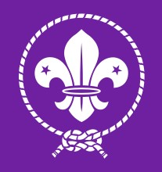

Persekutuan Pengakap Malaysia
I have kept up with a number of scouting-related events. One of the teachers at my school is a member of the batu pahat scouts. He participated actively in both small- and large-scale school activities as well as the big scout group program. There are several opportunities for Malaysian scouts to interact with foreign scout groups both inside and outside of their own nation.
Scouting, also known as the Scout Movement, is a worldwide youth movement employing the Scout method, a program of informal education with an emphasis on practical outdoor activities, including camping, woodcraft, aquatics, hiking, backpacking, and sports. Another widely recognized movement characteristic is the Scout uniform, by intent hiding all differences of social standing in a country and encouraging equality, with neckerchief and campaign hat or comparable headwear. Distinctive uniform insignia include the fleur-de-lis and the trefoil, as well as merit badges and other patches.

In 1907, Robert Baden-Powell , a Lieutenant General in the British Army, held a Scouting encampment on Brownsea Island in England. Baden-Powell wrote Scouting for Boys (London, 1908), partly based on his earlier military books. The Scout Movement of both Boy Scouts and Girl Scouts was well established in the first decade of the twentieth century. Later, programs for younger children, such as Wolf Cubs (1916), now Cubs, and for older adolescents, such as Rovers (1918), were adopted by some Scout organizations. In 1910, Baden-Powell formed the Girl Guides, for girls in the United Kingdom which spread internationally as Girl Guides and includes age programs of (Brownie Guide, Girl Guide and Girl Scout, Ranger Guide).
